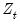
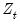

In the discussion that follows, we will generalize the specification given in (51.1)—
(51.3) by allowing the system matrices and vectors to depend upon observable explanatory variables

and unobservable parameters

. Estimation of the parameters

is discussed in
“Estimation”.
One important conditional distribution is obtained by setting , so that we obtain the one-step ahead mean 
and
one-step ahead variance 
of the states

. Under the Gaussian error assumption,

is also the minimum mean square error estimator of

and is the mean square error (MSE) of . If the normality assumption is dropped,

is still the minimum mean square
linear estimator of

.
The Kalman (Bucy) filter is a recursive algorithm for sequentially updating the one-step ahead estimate of the state mean and variance given new information. Details on the recursion are provided in the references above. For our purposes, it is sufficient to note that given initial values for the state mean and covariance, values for the system matrices , and observations on  , the Kalman filter may be used to compute one-step ahead estimates of the state and the associated mean square error matrix, , the contemporaneous or filtered
, the Kalman filter may be used to compute one-step ahead estimates of the state and the associated mean square error matrix, , the contemporaneous or filtered state mean and variance, , and the one-step ahead prediction, prediction error, and prediction error variance, . Note that we may also obtain the standardized prediction residual,

, by dividing

by the square-root of the corresponding diagonal element of

.
Suppose that we observe the sequence of data up to time period  . The process of using this information to form expectations at any time period up to
. The process of using this information to form expectations at any time period up to  is known as fixed-interval smoothing
is known as fixed-interval smoothing. Despite the fact that there are a variety of other distinct forms of smoothing (
e.g., fixed-point, fixed-lag), we will use the term
smoothing to refer to fixed-interval smoothing.
Lastly, the smoothing procedure allows us to compute smoothed disturbance estimates, and , and a corresponding
smoothed disturbance variance matrix:
It is also worth noting that the n-step ahead forecasts may be computed using a slightly modified version of the basic Kalman recursion (Harvey 1989). To forecast at period , simply initialize a Kalman filter at time

with the values of the predicted states and state covariances using information at time

, and run the filter forward

additional periods using no additional signal information. This procedure is repeated for each observation in the forecast sample, .
The concept of dynamic forecasting should be familiar to you from other EViews estimation objects. In dynamic forecasting, we start at the beginning of the forecast sample

, and compute a complete
set of
n-period ahead forecasts for each period

in the forecast interval. Thus, if we wish to start at period

and forecast dynamically to

, we would compute a one-step ahead forecast for

, a two-step ahead forecast for , and so forth, up to an -step ahead forecast for . It may be useful to note that as with
n-step ahead forecasting, we simply initialize a Kalman filter at time

and run the filter forward additional periods using no additional signal information. For dynamic forecasting, however, only one
n-step ahead forecast is required to compute all of the forecast values since the information set is not updated from the beginning of the forecast period.
Alternatively, we can compute smoothed forecasts which use all available signal data over the forecast sample (for example, ). These forward looking forecasts may be computed by initializing the states at the start of the forecast period, and performing a Kalman smooth over the entire forecast period using all relevant signal data. This technique is useful in settings where information on the entire path of the signals is used to interpolate values throughout the forecast sample.
We make one final comment about the forecasting methods described above. For traditional n-step ahead and dynamic forecasting, the states are typically initialized using the one-step ahead forecasts of the states and variances at the start of the forecast window. For smoothed forecasts, one would generally initialize the forecasts using the corresponding smoothed values of states and variances. There may, however, be situations where you wish to choose a different set of initial values for the forecast filter or smoother. The EViews forecasting routines (described in
“State Space Procedures”) provide you with considerable control over these initial settings. Be aware, however, that the interpretation of the forecasts in terms of the available information will change if you choose alternative settings.


, given the errors specified in period
. This particular timing convention, which follows Koopman, Shephard, and Doornik (1999), has important implications for the interpretation of correlations between errors in the signal and state equations
as discussed in “A Note on Correlated Errors”.
In the discussion that follows, we will generalize the specification given in (51.1)—(51.3) by allowing the system matrices and vectors to depend upon observable explanatory variables:
may also be interpreted as the MSE of the smoothed state estimate .
As with the one-step ahead states and variances above, we may use the smoothed values to form smoothed estimates of the signal variables, is given by the system of equations:
is given by the system of equations: is an
is an  vector of possibly unobserved state variables, where , ,
vector of possibly unobserved state variables, where , ,  and
and  are conformable vectors and matrices, and where
are conformable vectors and matrices, and where  and
and  are vectors of mean zero, Gaussian disturbances. Note that the unobserved state vector is assumed to move over time as a first-order vector autoregression.
are vectors of mean zero, Gaussian disturbances. Note that the unobserved state vector is assumed to move over time as a first-order vector autoregression.  and
and  are assumed to be serially independent, with contemporaneous variance structure:
are assumed to be serially independent, with contemporaneous variance structure: is an
is an  symmetric variance matrix, is an
symmetric variance matrix, is an  symmetric variance matrix, and is an matrix of covariances.
symmetric variance matrix, and is an matrix of covariances. given information available at time
given information available at time  . We can define the mean and variance matrix of the conditional distribution as:
. We can define the mean and variance matrix of the conditional distribution as: , and is the MSE of the estimate.
, and is the MSE of the estimate.  . In this setting, the
. In this setting, the  will understate the true variability of the forecast, and should be viewed as being computed conditional on the specific value of the estimated parameters.
will understate the true variability of the forecast, and should be viewed as being computed conditional on the specific value of the estimated parameters. and
and  are Gaussian, the sample log likelihood:
are Gaussian, the sample log likelihood: (see
(see  and variance matrix
and variance matrix  . With some stationary models, steady-state conditions allow us to use the system matrices to solve for the values of
. With some stationary models, steady-state conditions allow us to use the system matrices to solve for the values of  and
and  . In other cases, we may have preliminary estimates of
. In other cases, we may have preliminary estimates of  , along with measures of uncertainty about those estimates. But in many cases, we may have no information, or
, along with measures of uncertainty about those estimates. But in many cases, we may have no information, or